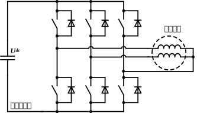
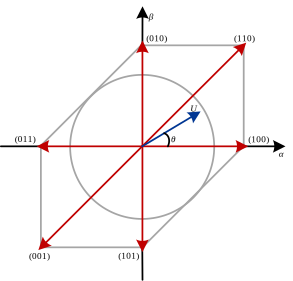

一种三相逆变器驱动单相电机方法
创建于2021-9-25
该项目完成于2021-7，原创
该项目完成于2021-7，原创
单相电机名为“单相”，实为“两相”。两相绕组的电流产生圆形或者椭圆形的旋转磁场，进而驱动电机旋转。三相逆变器一般用于三相电机的驱动，其输出三相电压通常互差120°，而单相电机两相电压的相位通常差90°，要想实现三相逆变器驱动单相电机，就要设法使其输出相位相差90°的两相电压。
单相电机与三相器连接方式有多种，本方案选用了如下图所示的形式。单相电机其中一相绕组的一端与A相相连接，单相电机另一相绕组的一端与B相相连接，三相电机两相绕组的另一端均与逆变器C相相连接。

记逆变器各相上桥臂导通下桥臂关断的状态为“1”，上桥臂关断下桥臂导通的状态为“0”，用三位数字从左往右分别代表逆变器A、B、C三相桥臂的状态，例如“100”代表A相上桥臂导通下桥臂关断、B相和C相上桥臂关断下桥臂导通，“000”等其它七个状态组合的具体含义类似，这里不再赘述。静止坐标系下的电压矢量如下图所示，与三相电机控制时六个非零电压矢量在静止坐标平面上均匀分布不同，三相逆变器控制单相电机时，六个非零电压矢量的分布是不均匀的。

本方案设计了合理的空间矢量调制（SVPWM）算法，从而可以输出合适的电压驱动单相电机运行。通常情况下，当逆变器工作在过调制区时，输出电压会小于给定电压，为解决这个问题，特设计了一种过调制算法，使用该方法可以保证逆变器输出电压的基波分量在过调制时也能达到给定值。
除此之外，三相电机常用的坐标变换、死区补偿、电压重构等算法也无法直接用于单相电机，均需要针对单相电机进行特殊处理。目前，该单相电机控制方案已经完成，并已得到了部分应用，目前来看，整体效果较好。